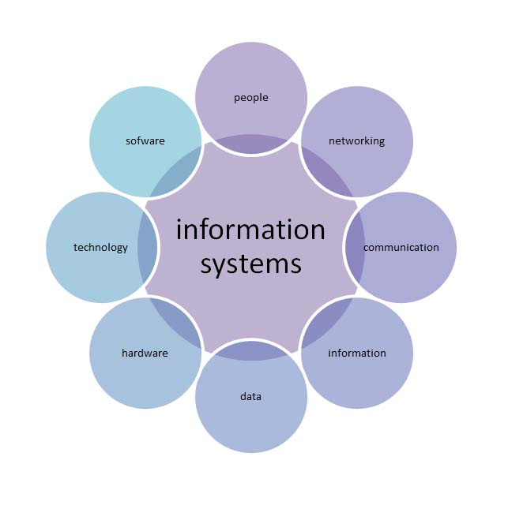

About me
Who Am I?
While pursuing my Bachelor's degree in International Relations and International Trade at the prestigious American University in Washington D.C., I had minored in computer science. Although I decided to pursue an undergraduate career in global affairs and international business, I always had a curious and keen interest in computer science and information technology. Upon graduating with a Bachelor's of Arts in 2015, my first professional role was an ocean export analyst. This position enabled me to use my expertise in international trade as I closely worked with commercial ports in the United States and in East Asia, mainly working with the Japanese ports of Osaka and Nagoya. My role also allowed me to use and sharpen my analytical skills as I designed and created both static and dynamic dashboards which used data analytics to organize and summarize the progress of cargo shipments, freight orders and fullfilment. After spending two years in the workforce, I decided to pursue my graduate studies in computer science to feed my interest in today's technological and digital revolution.
I first enrolled in UCLA's postbaccalaureate program in computer systems and applications programming, in which I extensively learnt about analysis and design of computer systems, Windows based operating systems as well as Linux/Unix based operating systems. Thanks to the exhaustive curriculum and the technical projects I worked on, I gained prowess in computer systems requirements analysis, design, development, installation, and operation as well as testing and documentation.
After completing my course of studies at UCLA, I completed my graduate curriculum at California State University Fullerton, where I graduated with a Master's of Science in Information Systems and Decision Sciences in May 2019. The graduate program was extensive and encompassed the technical, sociotechnical, and organizational perspectives of information systems. Aside from working on professional and personal technical projects, participating in data competitions and sales competitions, as well as regularly writing articles and literature reviews enables me to constantly improve and refine my technical, programming and analytical skills.
What Do I Do?
As an information systems engineer and data scientist, I enjoy solving complex data puzzles to answer business world problems. I spend most of my time working on data preparation and data analysis projects on Kaggle, DataCamp and Alteryx Community to name a few. I enjoy the process of brainstorming and investigating data to find a solution using different methods, and using different packages to optimize the solution depending on which programming language I use. I also like to read on new data analytics techniques and new technologies breakthroughs. Additionally, I am very active on online data communities such as Alteryx Community in which I enjoy sharing ideas, broadening my knowledge on the topic, and learning from experts with years of experience. Also, I work on my website constantly and consistently to upgrade it with new content and new updates.